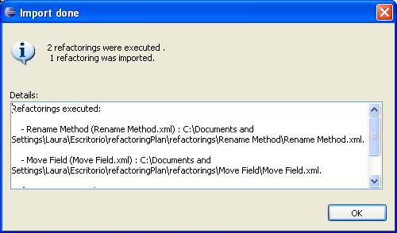

Importing Refactoring PlanImporting Refactoring Plan
Importing Refactoring PlanImporting Refactoring PlanThis section shows how to run and import a set of refactorings which take part into a refactoring plan.
Inside Eclipse select the menu item Dynamic Refactoring > Import Refactoring Plan... to open the Import Refactoring Plan dialog.
With the button "..." you can choose the directory where is located the refactoring plan if it`s different from the default one. The plugin will make a search through the directory looking for the files containing the definition of each refactoring of the plan.
checkbox.
Initially it shows a message indicating that the execution of the refactorings may cause problems if you deselect some of them to be executed or if the project does not contain elements with the same characteristics as the original one.

Confirmation
If any of the refactorings had problems while it´s executing an information dialog appears informaing about which ones had problems.